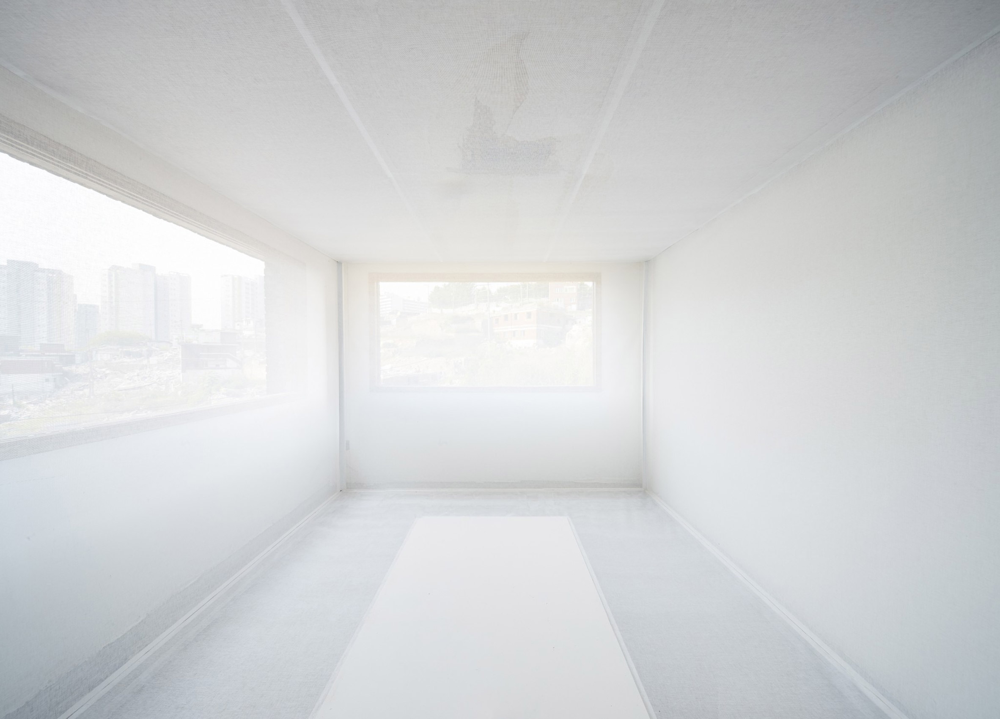

PART 3 - SYMBIOSIS
3.0 Embracing Death
3.1 Il faut cultiver notre Jardin —
the final chapter
!! flip your phone !!3.2 In Fine Vitae
In conclusion I suggest that we should develop a clearer understanding of how we currently visualise death and attempt to re-visualise the aspects that make us afraid. Everyone’s perception of death is different, and it is therefore really important to have a clear view on what that perception actually is. As I tried to also demonstrate in my story, inspired by self-conducted interviews, different individuals have varying attitudes towards death. Whether it is heaven/hell, endless void, or even non-existent - because it is completely avoided - each perception has certain connotations and visualisations attached to it. To a certain extent therefore, revisualisation must be different for everyone personally. If we can take the particular parts that cause the fear, and reframe them, we can attempt to reduce this fear, resulting in lesser limitations and phobias in life and even acceptance of our mortality. The power of re-visualisation can allow us to change our irrational imaginations into rational understandings.Furthermore, I believe that it is important to also reframe/re-visualise certain fundamental components within the specific language surrounding death in western society -- whether it linguistic or visual. This has already been a current topic of interest within the design world, and as seen in the aforementioned examples, design can have a positive impact on the re-framing death. Whether it is to incorporate a ritual within your life, as I tried to encourage the reader to do within this thesis, using your language to re-visualise the concept of death, or by literal changes to the current dark and somber aspects surrounding death in western society. Ranging from green, modern and beautiful burial solutions to a fashionable and cheerful death attire and even to creating new rituals and visuals for those left behind, re-visualisation knows no end. Through it, one can change the current lingo and pivot it towards positivity. This in turn replaces the anxious western minds with more curious and creative ones! Memento Mori to give your life more glory (to live a fuller life).
As a proposal for the future, and potentially my own contribution to this re-visualisation movement, looking into a new universal personification of death could be interesting. I believe the varying persona’s that represent death across different cultures are also one of the reasons attitudes towards our mortality differ so widely. If there were a single overarching personification that unites us all in death, could this partially help de-segmentize the world? What would a persona with a death positive viewpoint look like? Would it even impact the way we live our day to day lives? For now this is all just a theory and visualisations in my mind, yet as I tried to explain above, imagination has the power to positively change the way we view and come to terms with our own mortality.

PART TWO — RE-VISUALISE